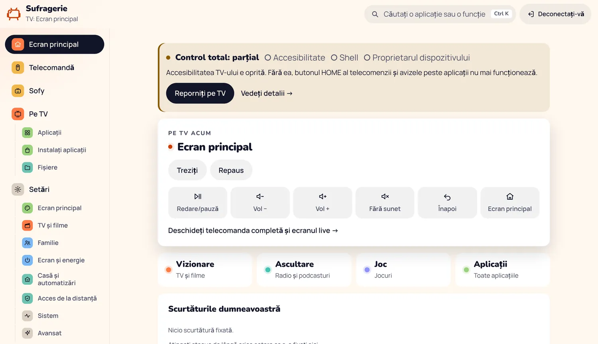
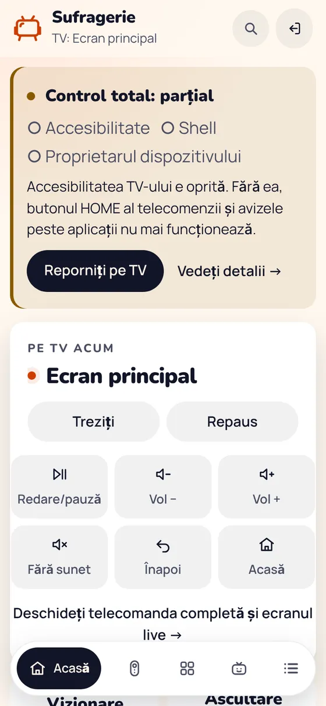

Momente plăcute la televizorul tău. Totul la locul lui, ca într-o sufragerie ordonată.
Făcut pentru cine vrea doar să se întindă pe canapea și să se uite la televizor. Sofaly schimbă ecranul principal, nu televizorul: Google e tot acolo, nu există reclame și fiecare lucru stă într-un singur loc.
Cinci rânduri, totul la vedere
Continuă, Vizionare, Ascultare, Joc și Aplicații. Două clicuri până la orice.
Deloc reclame
Nici în planul gratuit, nicio recomandare sponsorizată. Nicio urmărire care pleacă din casa ta.
Rapid pe un televizor simplu
Măsurat pe un Chromecast pe 32 de biți: animația se adaptează la ce poate duce dispozitivul.
Făcut pentru toată casa
Și pentru bunici
Text mare, un mod simplu care rostește numele aplicației, contrast ridicat și cititor de ecran. În 27 de limbi.
Se trezește odată cu tine
Alarma pornește singură televizorul, crește volumul încet și deschide Bună dimineața: ora, vremea și agenda.
Are grijă de casă
Luminile, scenele și soneria din Home Assistant pe televizor. Intră în repaus când pleacă toată lumea.
Vorbește cu telefonul tău
Controlează, scrie și trimite mesaje de pe orice telefon sau computer din casă, cu protecție prin PIN.
Vremea corectă
Vremea actuală vine de la cel mai apropiat aeroport: măsurată, nu ghicită. Prognoză pe 9 zile cu un singur OK.
Are grijă de el însuși
Un backup încuiat în fiecare noapte, întreținere cât dormi și un diagnostic care explică ce n-a mers.
Televizorul tău și pe telefon, și pe computer.
Deschide browserul în aceeași rețea, tastează PIN-ul și gata: telecomandă, scriere cu diacritice, ecranul televizorului live, mesaje și setări. Nimic de instalat și fără cont.


- Panou pe telefon și computerTelecomandă, scriere cu diacritice, imaginea live a ecranului, fotografii pentru screensaver, tabla și backupurile, din browserul oricărui dispozitiv din casă.
- Întreabă televizorulScrie sau spune „deschide YouTube”, „amintește-mi peste 7 minute”, „oprește-te peste 30 de minute”, iar televizorul face.
- Partajează de pe telefonInstalat ca aplicație, panoul apare în Partajare: un videoclip YouTube se deschide pe televizor, un link se deschide pe televizor, iar un text devine mesaj.
- Scurtătură în WindowsTelevizorul apare în Rețea din Explorer, cu o scurtătură care deschide panoul, chiar dacă IP-ul i se schimbă.
- Televizorul ca unitate de rețeaCopiază fișiere pe televizor trăgându-le: pe Windows apare în This PC ca un telefon; pe Mac, Linux și telefoane, prin WebDAV securizat.
- Mai multe caseAi grijă de televizorul de acasă și de cel al părinților de pe același telefon.
Ecrane reale ale panoului, cu date de exemplu.
120 de lucruri noi pe care le poate face televizorul tău. Organizate în 12 lumi, așa cum rândurile organizează ecranul.
- Ecranul principalUn ecran ordonat pe care îl înțelege oricine, aranjat cum îți place.19
- VizionareFilmele tale, serialele tale și un player de home cinema.14
- AscultareRadio și podcasturi cu aceeași grijă ca pentru video.5
- JocToate jocurile tale într-un singur loc, gata pentru controler.6
- AplicațiiAplicațiile tale într-o ordine care are sens.3
- CasaCeas deșteptător, temporizatoare, automatizări și casa conectată.13
- Vreme și screensaverVremea corectă și un screensaver pe care merită să-l lași pornit.13
- FamilieUn profil pentru fiecare, grijă pentru copii și o primire caldă pentru oaspeți.12
- Telefon și computerTelevizorul vorbește cu dispozitivele din casă.11
- Are grijă de el însușiBackup, întreținere și diagnostic fără să trebuiască să-ți amintești.13
- Pentru toată lumeaFăcut pentru oameni care văd, aud sau folosesc telecomanda în moduri diferite.5
- ConfidențialitateFără reclame, fără urmărire și un PIN acolo unde contează.6
Ecranul principal
Un ecran ordonat pe care îl înțelege oricine, aranjat cum îți place.

Rândurile
Continuă, Vizionare, Ascultare, Joc și Aplicații, fiecare pe rândul lui, unul sub altul. Totul la vedere, cu text mare.
Continuă
Un singur loc ca să revii la ce făceai: episodul, postul, podcastul sau ultima aplicație.
Bara de sus
Căutare, voce, vremea pe un rând și ceasul, mereu în același loc. Se strânge cât navighezi, ca ecranul să respire.
Rândurile
Continuă, Vizionare, Ascultare, Joc și Aplicații, fiecare pe rândul lui, unul sub altul. Totul la vedere, cu text mare.
Unde: Este ecranul principal: apare când apeși HOME.Continuă
Un singur loc ca să revii la ce făceai: episodul, postul, podcastul sau ultima aplicație.
Unde: Un rând de pe ecranul principal.Bara de sus
Căutare, voce, vremea pe un rând și ceasul, mereu în același loc. Se strânge cât navighezi, ca ecranul să respire.
Unde: Urci la ea cu ▲.Google funcționează în continuare
Asistentul Google, Gemini, căutarea și contul tău Google funcționează ca înainte. Sofaly schimbă ecranul principal, nu televizorul.
Unde: Folosește butonul de microfon ca întotdeauna.Panou rapid
Wi-Fi, Bluetooth, temporizator de somn, ieșire audio, alarmă, profiluri, notificări și lista de cumpărături, din orice aplicație.
Unde: Ține apăsat BACK.Telecomanda ta, regulile tale
HOME revine mereu la Sofaly. Dacă ții apăsat BACK se deschide panoul rapid, dacă ții apăsat HOME se deschide Casa, iar dacă ții apăsat OK pe o aplicație i se deschide meniul.
Unde: Un tester de taste arată fiecare buton pe care îl primește televizorul.Se redă acum
O pastilă sus, cu coperta și titlul a ceea ce rulează. OK pune pauză sau reia, iar ținut apăsat deschide aplicația.
Unde: Pornește-o în Ecran principal › Mai multe opțiuni.Teme și fundaluri
Întunecată, cu imaginea a ceea ce e în focus. Galerie, cu un tablou de la The Met în fiecare zi. Cer, cu satelit și hartă. Sau un fundal propriu, fotografie ori video. Merg și fundalurile din pluginuri, precum filmările aeriene Overflight.
Unde: Întunecată, Galerie și Cer în Basic; celelalte în Pro.Pictograme pe placul tăuPro
Folosește un pachet de pictograme din Play sau schimbă pictograma unei singure aplicații, pe rând.
Unde: Ține apăsat OK pe aplicație › Schimbă pictograma.Animații pe măsura televizorului
Televizoarele puternice animă totul; cele mai simple animă doar ce ai ales și încetinesc singure când scad cadrele.
Unde: Setări › Aspect.Faza luniiPro
Luna din seara asta și cât din ea e luminată, calculate chiar pe televizor, fără internet.
Unde: În prognoză, pe screensaver și pe pictograma vremii noaptea. Setări › Aspect.Numărătoare inversăPro
Câte zile mai sunt până la data aleasă sau până la următoarea sărbătoare.
Unde: În pastila din partea de sus a ecranului. Setări › Aspect.Memento pentru casăPro
O notă care revine în zilele săptămânii pe care le alegi: ziua reciclării, medicamentul, un curs.
Unde: În pastila din partea de sus a ecranului. Setări › Aspect.Starea serviciului tăuPro
Televizorul verifică o adresă dată de tine și arată dacă funcționează: serverul de acasă, site-ul magazinului.
Unde: În pastila din partea de sus a ecranului. Setări › Aspect.Cursurile de aziPro
Valute, bitcoin și ether la valoarea de azi, din surse oficiale deschise.
Unde: Lângă vreme, în bara de sus. Setări › Aspect.Următorul meci al echipei talePro
Când și cu cine joacă echipa ta data viitoare, pe un card pe ecranul principal.
Unde: Pe ecranul principal. Setări › Aspect.Carduri din alte aplicațiiPro
Pe lângă cardurile Sofaly, aplicațiile partenere își pun cardurile pe ecranul principal: comanda care vine, autobuzul, anunțul de la bloc.
Unde: Cardurile apar la finalul lumii Vizionare.Insula din partea de sus a ecranului
Avizele se perindă într-o pastilă sus: fără internet, memento, agendă și alarmă. Ce e important crește 5 secunde cu „▲ pentru a deschide”, soneria Casei apare pe loc, iar când pornești televizorul vine un rezumat a ce s-a întâmplat.
Unde: Ecran principal, sus.Sugestia potrivită la momentul potrivit
Fără inteligență artificială: din folosirea din săptămână, televizorul sugerează ce are sens la ora aceea.
Unde: Ecran principal.
Vizionare
Filmele tale, serialele tale și un player de home cinema.
De pe computer
Videoclipuri, muzică și fotografii din Plex, Jellyfin, Emby, foldere de pe PC sau NAS (SMB, WebDAV, FTP, SFTP, NFS), OneDrive, Dropbox, Box, Google Drive, UPnP și stickuri USB.
Un player care redă orice
Sunet Dolby (AC3, E-AC3), DTS și TrueHD, plus subtitrări Blu-ray, DVD și anime, fără să instalezi Kodi sau VLC.
Reia de unde ai rămas
Filmele și episoadele revin exact unde trebuie. Episodul următor pornește după 10 secunde, iar după 3 la rând televizorul te întreabă dacă te mai uiți.
De pe computer
Videoclipuri, muzică și fotografii din Plex, Jellyfin, Emby, foldere de pe PC sau NAS (SMB, WebDAV, FTP, SFTP, NFS), OneDrive, Dropbox, Box, Google Drive, UPnP și stickuri USB.
Unde: Serverele pornite și stickurile USB apar singure; restul se pun din Adaugă.Un player care redă orice
Sunet Dolby (AC3, E-AC3), DTS și TrueHD, plus subtitrări Blu-ray, DVD și anime, fără să instalezi Kodi sau VLC.
Unde: Apasă ▼ în timpul unui video pentru audio, subtitrări și mărimea subtitrărilor.Reia de unde ai rămas
Filmele și episoadele revin exact unde trebuie. Episodul următor pornește după 10 secunde, iar după 3 la rând televizorul te întreabă dacă te mai uiți.
Unde: Funcționează singur.Sari peste intro
Când introul unui serial e cunoscut, apare „Sari peste intro · OK”. Poți și să marchezi introul o dată, iar televizorul ține minte.
Unde: Pornit din prima.Audio și subtitrări preferate
Original cu subtitrări sau dublat, ales o dată și ținut minte pentru fiecare titlu. Subtitrări de pe internet când fișierul nu are.
Unde: TV și filme › Audio și subtitrări.Filme fără sacadări
Televizorul trece la 24 Hz cât rulează un film, ca panoramările camerei să rămână fluide.
Unde: Pornește odată cu filmul; ecranul clipește negru o secundă.Vezi și auzi mai bine
Subtitrări pe fundal negru sau în galben, „Voce mai clară”, care scoate în evidență vorbirea, și „Volum uniform”, care domolește filmele zgomotoase și le ridică pe cele încete.
Unde: În meniul ▼ al playerului.Subtitrări automateUltra
Când nu există subtitrare în limba ta, televizorul o traduce pe cea care există.
Unde: Alege-o în meniul de subtitrări al playerului.Pagini complete de filmUltra
Poster, notă, distribuție, trailer, clasificare de vârstă și colecția filmului pe o pagină frumoasă, cu text mare. Cu „Cine e actorul acela?”: fotografie, personaj și alte roluri.
Unde: OK pe un film sau serial.Listele tale Trakt și SimklPro
Ce vrei să vezi și ce ai văzut, sincronizate cu contul tău și cu celelalte dispozitive.
Unde: Conectează-te cu QR-ul din TV și filme › Servicii.O singură căutare pentru tot
Găsește filme, seriale, posturi și aplicații deodată și duce aceeași căutare în YouTube, Netflix sau Prime Video.
Unde: În bara de sus sau cu vocea.Două subtitrări deodată
De exemplu, limba ta jos și originalul sus, ca să înveți sau ca să vă uitați împreună.
Unde: Meniul ▼ al playerului › Subtitrare.Dialog mai tare
Când sunetul 5.1 devine stereo, vorbirea rămâne în față, iar exploziile nu acoperă vocile.
Unde: Meniul ▼ al playerului.Fără spoilere și a doua limbă
Rezumatul unui episod pe care nu l-ai văzut rămâne ascuns. Nu există audio sau subtitrare în limba ta? Intră a doua limbă aleasă.
Unde: TV și filme › Audio și subtitrări.
Ascultare
Radio și podcasturi cu aceeași grijă ca pentru video.

Radio din toată lumea
Mii de posturi de radio deschise, după nume, țară sau gen, cu favoritele tale și ultimele ascultate.
Podcasturi
Abonează-te după nume, ascultă pe televizor și reia episodul de unde ai rămas.
Descoperă podcasturi
Caută în tot catalogul deschis de podcasturi și vezi ce e în tendințe în țara ta.
Radio din toată lumea
Mii de posturi de radio deschise, după nume, țară sau gen, cu favoritele tale și ultimele ascultate.
Unde: Ascultare › Radio.Podcasturi
Abonează-te după nume, ascultă pe televizor și reia episodul de unde ai rămas.
Unde: Ascultare › Podcasturi.Descoperă podcasturiPro
Caută în tot catalogul deschis de podcasturi și vezi ce e în tendințe în țara ta.
Unde: Ascultare › Podcasturi › Căutare.Player pe tot ecranul
Copertă mare, capitole, viteză și un temporizator de somn care pune pauză la finalul episodului.
Unde: Ascultare › Se redă acum › Deschide playerul.Sunetul în căștile talePro
Sunetul filmului merge în căștile telefonului, sincronizat, ca să te uiți noaptea fără să trezești pe nimeni.
Unde: Meniul ▼ al playerului › Sunet pe telefon.
Joc
Toate jocurile tale într-un singur loc, gata pentru controler.

Toate jocurile tale într-un singur loc
GeForce NOW, Steam Link, Moonlight, PS Remote Play, RetroArch și jocurile televizorului ies din rândul de aplicații și stau în Joc, grupate în Cloud, De pe PC, Retro și Pe TV.
Joacă pe PC-ul de la etaj
Televizorul trezește computerul prin rețea, așteaptă să răspundă și deschide Moonlight sau Steam Link. Trezirea PC-ului prin rețea merge și în afara lumii Joc, dintr-o scurtătură pe ecranul principal.
Testează rețeaua
Îți spune dacă internetul tău face față jocurilor în cloud și te avertizează înainte să deschizi un joc în cloud pe o rețea slabă.
Toate jocurile tale într-un singur loc
GeForce NOW, Steam Link, Moonlight, PS Remote Play, RetroArch și jocurile televizorului ies din rândul de aplicații și stau în Joc, grupate în Cloud, De pe PC, Retro și Pe TV.
Unde: Ține apăsat OK pe un joc ca să-i schimbi grupul.Joacă pe PC-ul de la etaj
Televizorul trezește computerul prin rețea, așteaptă să răspundă și deschide Moonlight sau Steam Link. Trezirea PC-ului prin rețea merge și în afara lumii Joc, dintr-o scurtătură pe ecranul principal.
Unde: Salvează computerul o dată în panoul web.Testează rețeaua
Îți spune dacă internetul tău face față jocurilor în cloud și te avertizează înainte să deschizi un joc în cloud pe o rețea slabă.
Unde: Joc › Testează rețeaua.Controlere de jocuri
Asociază un controler fără să cauți prin meniuri, vezi sus controlerele conectate și, dacă vrei, fă ca un controler conectat să deschidă Joc.
Unde: Joc › Asociază controlerul.Mod joc
Cât timp un joc e deschis, screensaverul, filtrul de noapte și avizele așteaptă să se termine partida.
Unde: Pornește singur.Gașca ta de pe Discord
Vezi cine de pe serverul tău Discord e online și în ce joc și cheamă gașca direct de pe televizor.
Unde: Pornește widgetul serverului și lipește numărul lui.
Aplicații
Aplicațiile tale într-o ordine care are sens.
Favoritele tale în față
Aplicații arată cele 8 aplicații pe care le deschizi cel mai des, iar „Toate aplicațiile” aduce restul într-o grilă.
Cum vrei tu
Mută, grupează sau ascunde orice aplicație. Aplicațiile din fabrică pe care nu le folosești se dau la o parte.
Butoanele Netflix și YouTube, libere
Butoanele de aplicații ale telecomenzii deschid orice aplicație vrei. Apeși ca să deschizi, ții apăsat 3 secunde ca să schimbi.
Favoritele tale în față
Aplicații arată cele 8 aplicații pe care le deschizi cel mai des, iar „Toate aplicațiile” aduce restul într-o grilă.
Unde: Pe rândul Aplicații.Cum vrei tu
Mută, grupează sau ascunde orice aplicație. Aplicațiile din fabrică pe care nu le folosești se dau la o parte.
Unde: Ține apăsat OK pe o aplicație.Butoanele Netflix și YouTube, libere
Butoanele de aplicații ale telecomenzii deschid orice aplicație vrei. Apeși ca să deschizi, ții apăsat 3 secunde ca să schimbi.
Unde: Funcționează cu telecomanda originală.
Casa
Ceas deșteptător, temporizatoare, automatizări și casa conectată.

Ceas deșteptător care pornește televizorul
La oră fixă, televizorul pornește singur, volumul crește încet și există amânare. Fiecare alarmă are nume, zile, sunet și volum, ba chiar o aplicație sau ultimul post.
Temporizatoare și clepsidră
Până la 3 temporizatoare cu nume, cu aviz pe ecran, și un cronometru.
Oprire blândă
Temporizatorul de somn estompează ecranul și scade volumul în ultimele 5 minute, ca nimeni să nu se trezească la oprire.
Ceas deșteptător care pornește televizorul
La oră fixă, televizorul pornește singur, volumul crește încet și există amânare. Fiecare alarmă are nume, zile, sunet și volum, ba chiar o aplicație sau ultimul post.
Unde: Ține apăsat BACK › Alarmă.Temporizatoare și clepsidră
Până la 3 temporizatoare cu nume, cu aviz pe ecran, și un cronometru.
Unde: „Hey Google, deschide Amintește-mi peste 10 minute”.Oprire blândă
Temporizatorul de somn estompează ecranul și scade volumul în ultimele 5 minute, ca nimeni să nu se trezească la oprire.
Unde: Butonul temporizatorului din panoul rapid.Se oprește dacă nu se uită nimeni
După timpul ales fără nicio tastă apăsată, televizorul întreabă cu text mare dacă te mai uiți, apoi intră în repaus.
Unde: Ecran și energie › Oprire când nu e folosit.Rețete gata făcute
Somn, Telenovelă și Meci configurează televizorul dintr-odată (sunet, ecran și avize). Un OK aplică, altul anulează.
Unde: Panou rapid.AutomatizăriPro
La o oră fixă, la apăsarea unui buton sau când se întâmplă ceva (filmul a fost pus pe pauză, au plecat toți, vine ploaia): televizorul deschide o aplicație, rulează o scenă sau se oprește.
Unde: Casă și automatizări › Automatizări.Home Assistant pe televizorPro
Lumini, prize, ventilatoare, jaluzele, aer condiționat și scene, direct de pe canapea. Vorbește cu serverul tău în rețeaua ta, fără cloud la mijloc.
Unde: Ține apăsat HOME.Cine e la ușăPro
Când sună soneria, imaginea camerei apare peste ce te uiți.
Unde: Cu Home Assistant.Doarme când pleacă toți
Cu un router UniFi, televizorul observă că telefoanele familiei au plecat și intră în repaus.
Unde: Ecran și energie › Mai multe opțiuni.Scurtături vocale
„Hey Google, deschide Prognoza meteo” citește prognoza cu voce tare. Filme, Casa mea, Tabla, temporizatoarele și oprirea se deschid la fel.
Unde: Folosește butonul de microfon.Pornește odată cu televizorul
Ai pornit televizorul cu telecomanda lui? Dispozitivul se trezește și el, fără ecran negru. Plus volumul LG prin rețea; când dispozitivul adoarme, LG-ul se oprește odată cu el.
Unde: Pornește singur.Nu deranja
În orele pe care le alegi, avizele și sunetele așteaptă.
Unde: Casă și automatizări.„Doar dacă” și sărbători legale
Automatizări care rulează doar în zilele lucrătoare, cu cineva acasă sau când plouă, știind sărbătorile legale din țara ta.
Unde: Casă și automatizări › Automatizări.
Vreme și screensaver
Vremea corectă și un screensaver pe care merită să-l lași pornit.
Vremea de azi, măsurată
Temperatura vine din raportul celui mai apropiat aeroport, iar pictograma de zi/noapte urmează răsăritul și apusul din locul unde e televizorul.
Ploaia din trei modele
Șansa de ploaie este mediana a trei modele meteo (ECMWF, ICON și GFS), care greșește mai rar decât oricare dintre ele.
Prognoză pe tot ecranul
Următoarele 24 de ore, un grafic al ploii, 9 zile, calitatea aerului, soarele și luna.
Vremea de azi, măsurată
Temperatura vine din raportul celui mai apropiat aeroport, iar pictograma de zi/noapte urmează răsăritul și apusul din locul unde e televizorul.
Unde: Sus pe ecranul principal.Ploaia din trei modeleUltra
Șansa de ploaie este mediana a trei modele meteo (ECMWF, ICON și GFS), care greșește mai rar decât oricare dintre ele.
Unde: Apare singură în prognoză.Prognoză pe tot ecranul
Următoarele 24 de ore, un grafic al ploii, 9 zile, calitatea aerului, soarele și luna.
Unde: OK pe vreme.Alertă de ploaie
Un aviz peste aplicația ta când e pe cale să înceapă ploaia. E timpul să strângi rufele.
Unde: Ecran principal › Vreme.Un screensaver pe care merită să-l lași pornit
Salut, un ceas mare, data, vremea și carduri cu notificări, următoarea alarmă și mesaje. În tema Galerie, tabloul zilei se mișcă încet, ca nimic să nu rămână imprimat pe ecran.
Unde: Ecran și energie › Screensaver.Fotografiile tale pe screensaver
Trimite fotografii de pe telefon sau alege un folder din rețea. Rămân într-un folder pe care doar televizorul îl vede.
Unde: Un QR deschide panoul la pagina potrivită.Bună dimineața
Când oprești alarma: salut, ora, prognoza și agenda zilei, iar televizorul le poate citi cu voce tare.
Unde: „Hey Google, deschide Bună dimineața”.Google Calendar
Evenimentele și zilele de naștere de azi pe televizor, dintr-un cont sau din toate împreună.
Unde: OK pe data de sus.Filtru de noapte
Noaptea ecranul devine mai cald și mai blând cu ochii.
Unde: Ecran și energie › Mai multe opțiuni.Rezumatul săptămânii
Duminică seara, un card cu timpul de ecran pe aplicație, internetul consumat și căderile de rețea.
Unde: Ecran și energie › Mai multe opțiuni.Alertă de căldură sau frig puternic
Aceeași alertă ca la ploaie, peste orice ecran, când vine căldură mare sau frig puternic.
Unde: Ecran principal › Vreme.Cerul nopții
Stația Spațială, ploi de meteori, superlune și eclipse. Te anunță doar când se văd de acasă, cu cerul senin.
Unde: Screensaver.Anul televizorului tău
În decembrie, o retrospectivă a anului: ce s-a văzut, ascultat și jucat cel mai mult pe televizorul tău. Rămâne doar pe televizor.
Unde: Apare în decembrie.
Familie
Un profil pentru fiecare, grijă pentru copii și o primire caldă pentru oaspeți.

Un profil pentru fiecare
Fiecare cont Google de pe televizor are propriile favorite, lucruri de continuat și ordinea aplicațiilor.
Profil pentru copii
Marchează un profil ca fiind al unui copil: modul copii și ora de culcare pornesc singure, iar ieșirea cere PIN-ul părinților.
Ora de culcare
În orele alese, se deschid doar aplicațiile permise, iar volumul are o limită.
Un profil pentru fiecare
Fiecare cont Google de pe televizor are propriile favorite, lucruri de continuat și ordinea aplicațiilor.
Unde: Ține apăsat BACK › Profiluri.Profil pentru copii
Marchează un profil ca fiind al unui copil: modul copii și ora de culcare pornesc singure, iar ieșirea cere PIN-ul părinților.
Unde: Panou rapid › Profiluri.Ora de culcare
În orele alese, se deschid doar aplicațiile permise, iar volumul are o limită.
Unde: Familie › Mai multe opțiuni.Timp de ecran zilnic
O limită zilnică de televizor pentru cine alegi tu.
Unde: Familie › Mai multe opțiuni.Modul oaspete
Ascunde profilul tău, calendarul tău și aplicațiile pe care le alegi cât ai musafiri.
Unde: Butonul Oaspete din panoul rapid.Wi-Fi pentru oaspeți
Tastezi parola o dată; oaspeții scanează un QR de pe televizor și sunt conectați.
Unde: Familie › Wi-Fi pentru oaspeți.Tabla familiei
Lista de cumpărături, notițe fixate și zilele de naștere de azi, în panoul rapid și pe screensaver.
Unde: Editezi de pe telefon; OK bifează un element.Mesaje de departePro
Familia care locuiește departe trimite mesaje și fotografii pe televizorul de acasă, de oriunde.
Unde: Invitație prin link.Mesaje videoPro
Un videoclip scurt de la familie apare pe televizor cu numele celui care l-a trimis.
Unde: Din panoul de pe telefon.Clasificare pe vârste
În modul copii, filme și seriale după vârsta potrivită, pe lângă categorii.
Unde: Familie.Modul gazdă
Pentru închirieri: oaspeții folosesc televizorul, iar lucrurile tale rămân puse deoparte și revin la sfârșitul sejurului.
Unde: Familie › Mai multe opțiuni.Grijă de la distanță
Cine locuiește singur cere ajutor ținând apăsată o tastă, iar telefonul celui care are grijă primește alerta. Pornește doar cu acordul celui care locuiește acolo, dat chiar pe televizor.
Unde: Familie › Grijă de la distanță.
Telefon și computer
Televizorul vorbește cu dispozitivele din casă.

Panou pe telefon și computer
Telecomandă, scriere cu diacritice, imaginea live a ecranului, fotografii pentru screensaver, tabla și backupurile, din browserul oricărui dispozitiv din casă.
Întreabă televizorul
Scrie sau spune „deschide YouTube”, „amintește-mi peste 7 minute”, „oprește-te peste 30 de minute”, iar televizorul face.
Partajează de pe telefon
Instalat ca aplicație, panoul apare în Partajare: un videoclip YouTube se deschide pe televizor, un link se deschide pe televizor, iar un text devine mesaj.
Panou pe telefon și computer
Telecomandă, scriere cu diacritice, imaginea live a ecranului, fotografii pentru screensaver, tabla și backupurile, din browserul oricărui dispozitiv din casă.
Unde: Acces de la distanță › Conectare de pe telefon (QR).Întreabă televizorulPro
Scrie sau spune „deschide YouTube”, „amintește-mi peste 7 minute”, „oprește-te peste 30 de minute”, iar televizorul face.
Unde: În panoul de pe telefon.Partajează de pe telefonPro
Instalat ca aplicație, panoul apare în Partajare: un videoclip YouTube se deschide pe televizor, un link se deschide pe televizor, iar un text devine mesaj.
Unde: Partajare › Sofaly.Televizorul ca unitate de rețeaPro
Copiază fișiere pe televizor trăgându-le: pe Windows apare în This PC ca un telefon; pe Mac, Linux și telefoane, prin WebDAV securizat.
Unde: Acces de la distanță › Afișați ca unitate de rețea.Scurtătură în WindowsPro
Televizorul apare în Rețea din Explorer, cu o scurtătură care deschide panoul, chiar dacă IP-ul i se schimbă.
Unde: Activă oricând panoul e pornit.Continuă pe alt televizorPro
Te-ai oprit în sufragerie? Trimite-l în dormitor: celălalt televizor arată „Continui de unde ai rămas?” și se deschide în același punct.
Unde: Meniul playerului › Trimite pe alt televizor.Vizionare împreunăUltra
Două case văd același lucru în același timp: pui pauză aici, se pune pauză și acolo, cu reacții în colț.
Unde: Invitație între televizoarele familiei.Mai multe caseUltra
Ai grijă de televizorul de acasă și de cel al părinților de pe același telefon.
Unde: Din aplicația pentru telefon.Vorbește cu televizorul prin Claude
Discută cu televizorul prin Claude: îți spune ce rulează, deschide aplicații și ajustează lucruri. Un cod QR pe ecran, fără cheie și fără parolă.
Unde: Acces de la distanță › Claude prin internet.Tastatura telefonului
S-a deschis un câmp de text pe televizor? Tastatura apare pe telefonul tău.
Unde: Pornește singur odată cu panoul.Alerte pe telefon
Alarma, soneria și mesajele ajung pe telefon, fără server la mijloc.
Unde: Panou › Alerte pe telefon.
Are grijă de el însuși
Backup, întreținere și diagnostic fără să trebuiască să-ți amintești.

Televizor nou în 2 minute
Ți-ai luat alt televizor? Scanezi un cod QR și totul trece pe el, criptat.
Backup încuiat, în fiecare noapte
Cât televizorul stă nefolosit, un backup complet încuiat cu parola ta. Se păstrează ultimele 7, iar în fiecare noapte televizorul verifică dacă s-ar restaura.
O copie în cloud
Copiile merg și în Google Drive, OneDrive, Dropbox, Box, NAS sau pe un stick USB. Încuiate: nici măcar cloudul nu le poate citi.
Televizor nou în 2 minute
Ți-ai luat alt televizor? Scanezi un cod QR și totul trece pe el, criptat.
Unde: Sistem › Backup › Mută pe un televizor nou.Backup încuiat, în fiecare noapte
Cât televizorul stă nefolosit, un backup complet încuiat cu parola ta. Se păstrează ultimele 7, iar în fiecare noapte televizorul verifică dacă s-ar restaura.
Unde: Sistem › Backup automat.O copie în cloudPro
Copiile merg și în Google Drive, OneDrive, Dropbox, Box, NAS sau pe un stick USB. Încuiate: nici măcar cloudul nu le poate citi.
Unde: Sistem › Backup automat.Întreținere de noapte
Curăță resturile, repară permisiunile și reprogramează alarmele cât dormi.
Unde: Rulează singură.Diagnosticul televizorului
Internet, DNS și de ce s-a oprit o aplicație, totul deodată și în propoziții pe care le înțelegi.
Unde: „Hey Google, deschide Diagnosticul televizorului”.Test de viteză a internetului
Îți măsoară internetul dintr-o atingere și arată semnalul Wi-Fi, latența și viteza în cuvinte simple.
Unde: Setări › Avansat › Rețea.Cum se simte acest televizor
Televizorul își măsoară singur cifrele (timpul de deschidere, blocările, alarmele la timp) și le arată pe un singur ecran. Nimic nu iese din casă.
Unde: Sistem › Cum se simte acest televizor.Mod sigur
Dacă o versiune nouă se poartă ciudat imediat după instalare, televizorul trece într-un mod sigur și arată calea de ieșire.
Unde: Apare doar când e nevoie.Ce s-a schimbat
Fiecare versiune explică ce s-a schimbat și aduce o scurtă listă de verificat cu telecomanda.
Unde: Sistem › Ce s-a schimbat.Raportează o problemă
Spune ce s-a întâmplat cu telecomanda sau de pe telefon; televizorul adună ce trebuie, nimic personal.
Unde: Sistem › Raportează o problemă.Wi-Fi care revine singur
Dacă Wi-Fi-ul nu revine după o cădere, televizorul se reconectează singur.
Unde: Pornește singur.Fără internet, fără panică
Ecranul principal îți spune pe un rând ce funcționează în continuare cât internetul nu revine.
Unde: Apare doar când e nevoie.Curățarea aplicațiilor din fabrică
Dă la o parte aplicațiile venite cu televizorul pe care nu le folosești, cu anulare, și arată diferența măsurată înainte și după.
Unde: Sistem › Curățenie.
Pentru toată lumea
Făcut pentru oameni care văd, aud sau folosesc telecomanda în moduri diferite.

27 de limbi
Portugheză, engleză, spaniolă, franceză, germană, italiană, rusă, poloneză, turcă, japoneză, chineză, coreeană, hindi, indoneziană și arabă, cu ecrane de la dreapta la stânga. De asemenea neerlandeză, suedeză, daneză, norvegiană, finlandeză, cehă, greacă, maghiară, română, ucraineană, vietnameză și thailandeză. Urmează limba televizorului.
Mărimea textului
Normal, Mare sau Mai mare, pe toate ecranele, testat ca textul să nu fie niciodată tăiat sau suprapus.
Ecran simplu
Carduri mari, mai puține lucruri pe ecran și numele aplicației rostit cu voce tare. Pentru cei cărora telecomanda li se pare grea.
27 de limbi
Portugheză, engleză, spaniolă, franceză, germană, italiană, rusă, poloneză, turcă, japoneză, chineză, coreeană, hindi, indoneziană și arabă, cu ecrane de la dreapta la stânga. De asemenea neerlandeză, suedeză, daneză, norvegiană, finlandeză, cehă, greacă, maghiară, română, ucraineană, vietnameză și thailandeză. Urmează limba televizorului.
Unde: Se schimbă singur odată cu televizorul.Mărimea textului
Normal, Mare sau Mai mare, pe toate ecranele, testat ca textul să nu fie niciodată tăiat sau suprapus.
Unde: Ecran principal › Mărimea textului.Ecran simplu
Carduri mari, mai puține lucruri pe ecran și numele aplicației rostit cu voce tare. Pentru cei cărora telecomanda li se pare grea.
Unde: Ecran principal › Mai multe opțiuni.Citire cu voce tare
Televizorul spune ce e în focus, cu sunete de navigare ca să știi unde ești.
Unde: Ecran principal › Mai multe opțiuni.Contrast ridicat
Text cu raport de contrast 7:1 și toate ecranele lizibile pentru cititorul de ecran Android.
Unde: Urmează setările de accesibilitate ale televizorului.
Confidențialitate
Fără reclame, fără urmărire și un PIN acolo unde contează.
Deloc reclame
Nici în planul gratuit, nicio recomandare sponsorizată. Ecranul e al tău.
Fără urmărire
Fără cont, fără statistici de utilizare și niciun raport de eroare care pleacă fără să-l trimiți tu.
Un PIN acolo unde contează
Tot ce schimbă televizorul cere un PIN, iar acțiunile care șterg ceva îl cer din nou. Prea multe încercări greșite? Așteptarea crește de fiecare dată.
Deloc reclame
Nici în planul gratuit, nicio recomandare sponsorizată. Ecranul e al tău.
Unde: Mereu.Fără urmărire
Fără cont, fără statistici de utilizare și niciun raport de eroare care pleacă fără să-l trimiți tu.
Unde: Mereu.Un PIN acolo unde contează
Tot ce schimbă televizorul cere un PIN, iar acțiunile care șterg ceva îl cer din nou. Prea multe încercări greșite? Așteptarea crește de fiecare dată.
Unde: Acces de la distanță › PIN.DNS privat
Alege un DNS securizat (DNS over TLS); dacă nu răspunde, televizorul revine singur la cel anterior.
Unde: Avansat › Rețea.Internet pe aplicație
Cât internet a folosit fiecare aplicație și cu cine a vorbit, păstrat pe televizor 7 zile.
Unde: Avansat › Rețea.PIN pentru a schimba ecranul principal
Nimeni nu-ți strică ecranul: mutarea, ascunderea sau schimbarea cer PIN-ul.
Unde: Ecran principal › Mai multe opțiuni.
Aplicația ta pe ecranul principal la care oamenii chiar se uită.
Un plugin Sofaly este propria ta aplicație Android TV. Trimite un card scurt, iar Sofaly îl desenează pe ecranul principal, cu text mare și în stilul casei.
- Livrare12 min
- Bus 426 min
- Sală de sport19:00
De ce să faci un plugin
În față, nu într-un sertar
Cardul tău stă pe ecranul principal, unde familia se uită de fiecare dată când pornește televizorul, nu pierdut într-o listă de aplicații.
Fără SDK, fără taxe
Un ContentProvider și un rând de date. Nicio bibliotecă de-a noastră de instalat, nicio taxă de plătit.
Aplicația ta, afacerea ta
Publică pe Play cum vrei, gratuit sau contra cost. Sofaly doar desenează cardul; aplicația și clienții sunt ai tăi.
Ce poți construi dincolo de ale noastre
- Livrarea taComanda a plecat, ajunge în 12 min.
- Autobuzul tăuLinia 42 sosește în 6 min.
- Sala ta de sportAntrenamentul de azi la 19:00.
- Blocul tăuFără apă mâine, între 9 și 12.
- Magazinul tăuOferta zilei: 20% reducere la cafea.
- Clubul tăuAntrenamentul s-a mutat sâmbătă.
Doi pași
- Declară un provider cu acțiunea Sofaly
- Răspunde cu un rând: titlu, valoare, detaliu și culoare
Șablon gata făcut Două aplicații exemplu pe care le poți compila azi: o numărătoare inversă până la o dată aleasă pe televizor și faza lunii de azi. Fără internet, fără cont. MIT No Attribution: copiază, redenumește pachetul, publică.
Reguli care îl protejează pe privitor
- Nu desenezi niciodată pe ecranul principal: trimiți text și o culoare, iar Sofaly desenează.
- Sofaly nu îți trimite niciodată nimic despre aplicațiile, conturile persoanei sau despre ce vizionează.
- Pluginurile fac parte din planul Pro, iar persoana alege care apar.
Deja pe televizor: fundaluri din pluginuri, pachete de pictograme și vitrina de pluginuri direct pe televizor.
PlanuriÎncepe gratuit. Crește când vrei.
Basic are deja ecranul principal complet, playerul, Ascultare, Joc, ceasul deșteptător și screensaverul. Pro și Ultra adaugă telefonul, casa și familia.
Prețurile apar când aplicația ajunge pe Google Play.
ÎntrebăriÎntrebări de pe canapea
Funcționează pe televizorul meu?
Am nevoie de un computer ca să-l instalez?
Aplicațiile mele rămân?
Are reclame?
Vine cu canale sau filme?
Și dacă vreau înapoi ecranul principal Google?
Momente plăcute la televizorul tău.
Instalează-l, apasă HOME și toată casa se descurcă.
În aplicația Downloader a televizorului, tastează codul 6566820
Sau descarcă APK-ul de la sofaly.tv/download